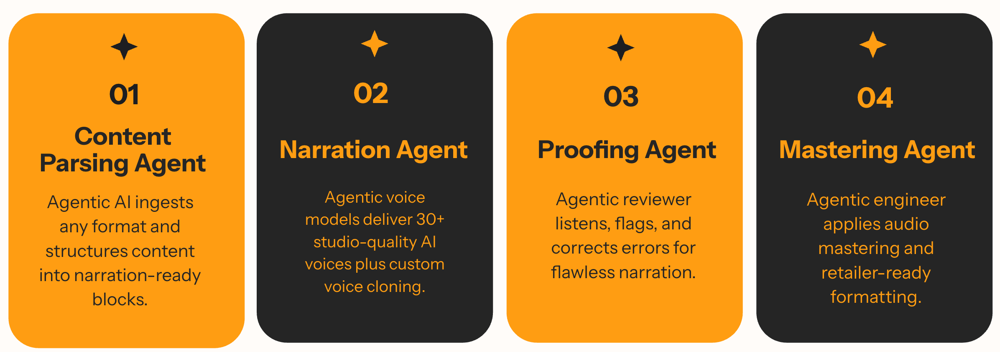

AudioFlo's ML architecture is built on a hybrid microservices design that combines the scalability of Google Cloud with the flexibility of on-premise infrastructure. This dual approach ensures we can handle enterprise-scale workloads while maintaining control over specialized processing requirements.
Hybrid Infrastructure Design
Google Cloud Run Services: Handles all API interface calls with auto-scaling and zero-downtime deployments
Google Cloud Run Jobs: Processes heavy, long-running audio generation tasks with dedicated resources
On-Premise GPU Infrastructure: Hosts specialized models for voice cloning and custom TTS requirements
Pub/Sub Messaging System: Ensures reliable, asynchronous communication between all microservices
Extensibility & Integration
One-Hour Integration: I designed the system so new TTS models or APIs can be plugged in within an hour
Supabase Integration: Seamlessly connects with our database for user management, job tracking, and analytics
Provider Agnostic: Abstract interface allows switching between ElevenLabs, OpenAI, or custom models without code changes
Service Extension: New services can be added without disrupting existing workflows
The microservices architecture ensures that each component can scale independently. When demand spikes for a particular voice or language, only the relevant services scale up, optimizing both performance and costs. The Pub/Sub system acts as the nervous system, orchestrating complex workflows while maintaining loose coupling between services.
This approach allows AudioFlo to deliver studio-quality audio at scale while maintaining the agility to adapt to new technologies. The combination of cloud elasticity and on-premise control positions us to handle everything from quick previews to massive batch conversions efficiently.
2. A Multi-Agentic AI System
Converting an ebook into a professional audiobook requires multiple sophisticated steps. I designed a comprehensive pipeline that ensures consistent quality from parsing to final mastering. Each stage uses specialized agents that work together to produce studio-quality output.

Figure 2: An end-to-end ebook processing pipeline with specialized agents
Processing Pipeline Steps
1.Document Parsing: Extract text, identify chapters, preserve formatting and metadata
8.Chapter Assembly: Stitch audio segments with proper transitions and chapter markers
9.Final Mastering: Apply compression, and loudness standards for professional output
10.Format Export: Generate multiple formats (MP3, M4B) with embedded metadata and cover art
11.Delivery Package: Create distribution-ready files with checksums and documentation
Each step in this pipeline is handled by specialized agents that communicate through our Pub/Sub system. This modular approach allows us to optimize each stage independently and ensures that failures in one step don't compromise the entire conversion. The result is a production-ready audiobook that meets industry standards for quality and format.
3. The Power of Integration
What sets AudioFlo apart is not just the individual technologies, but how they work together seamlessly. The ML architecture integrates with our core platform through well-defined APIs, allowing for:
Real-time Status Updates: Users see live progress as their audiobook moves through the pipeline
Intelligent Routing: The system automatically selects the best processing path based on content type
This integrated approach means that adding a new TTS provider or upgrading a processing component doesn't require system-wide changes. We can continuously improve the platform while maintaining stability for our users.
4. Status Monitoring
All machine learning operations are continuously monitored through Google Cloud Platform's comprehensive logging system. This real-time monitoring tracks processing status, resource utilization, and quality metrics across every stage of the audio generation pipeline. The centralized logging infrastructure provides instant visibility into system performance, allowing me to identify bottlenecks, optimize resource allocation, and ensure consistent service quality. When issues arise, automated alerts notify me immediately, enabling rapid response and minimal user impact.